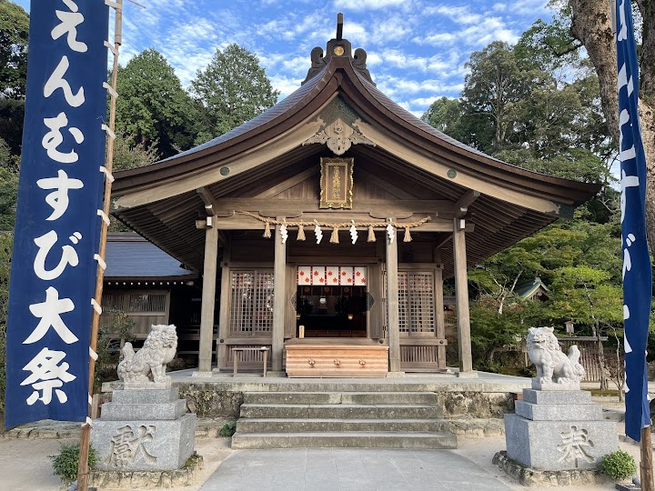
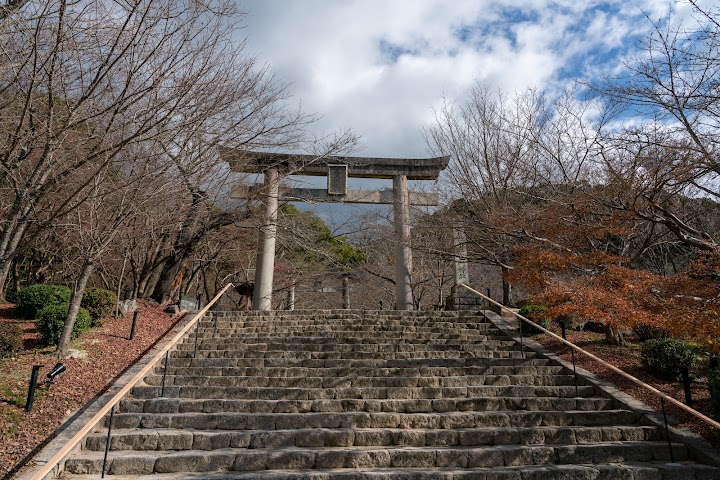
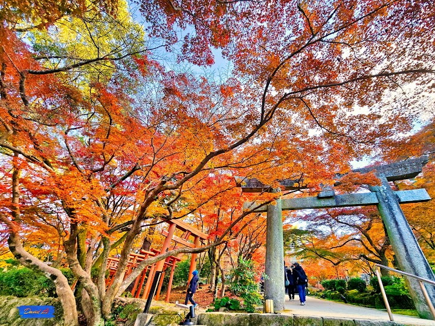
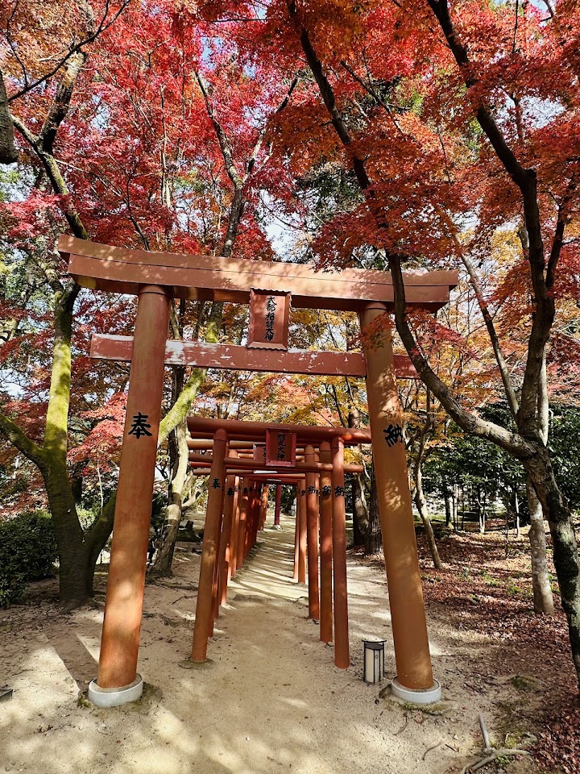
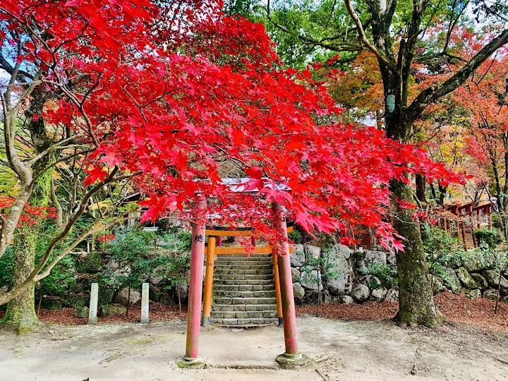

Kamado Shrine
Serene Shinto shrine set amid the trees, with sculptures, walking paths & seasonal foliage.
Open in Google Maps (street view, more photos and reviews there)






Visitor tips on finding it and getting there
Kamado shrine is a very serene and peaceful shrine tucked into the mountains of Dazaifu city. It receives fewer tourists than the neighbouring Dazaifu Shrine. The busses are fairly frequent and can reach this spot from Dazaifu station and Gojo station. Be aware of the many bees that live in the area, they fly everywhere, even in the charm shop. The charms are worth the money and is intricately designed.
A very beautiful, quiet, and peaceful temple. However, the many Chinese tourists who come here because of the popularity of popular anime should be more respectful to other visitors. A stunning shop with a variety of omamori and other goods! The couple omikuji there is another level of visual perfection 😍 Very clean, beautiful, and most importantly, there's a stunning view down the street. One thing to keep in mind: check the bus schedule and arrive early, as many people walk there and, when exhausted, take the bus back, which can be very crowded.